Сертификаты
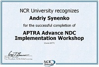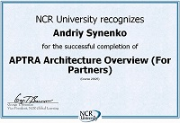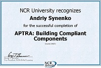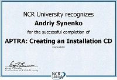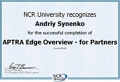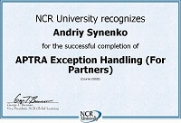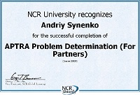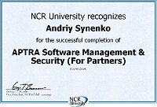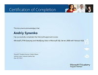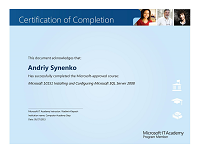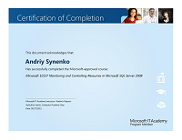
Контактная информация:
e-mail: andy.sinenko@gmail.com
Построение сборок ПО для банкоматов NCR на базе семейства ПО Aptra Advance NDC. Разработка дополнительных модулей в соответствии с требованиями клентов.
Поддержка ERP системы BSI. Конфигурирование системы под требования заказчика; написание запросов, процедур, функций и триггеров на T-SQL, написание функций обработки данных на VBScript.
Сопровождение компьютерного парка компании – инсталляция ПО, ремонт; конфигурирование маршрутизаторов, конфигурирование и поддержка серверов.
Организация и контроль эмиссии платежных карт. Контроль состояния эквайринговой сети, поддержка ее работоспособности: инсталляция, конфигурирование банкоматов и POS терминалов.
Поддержание связи с заводами, контроль качества эксплуатируемой продукции, организация функционирования сервисных центров. Решение технических вопросов с продукцией в регионах. Модернизация и поддержание БД выполненных работ и склада (MS Access).
Контроль за работой сервисных центров в Украине, участие в разработке системы фискального контроля игорных заведений.
Организация сервисной службы в Украине. Контроль качества работ и соблюдения SLA, закупка запасных частей, планирование, разработка и поддержка ПО (платформа APTRA). Разработка и внедрение электронного кассира. (Шведбанк)
Ремонт, обслуживание банкоматов (инсталляция, профилактика, настройка ПО и связи); обучение инженеров.
Ремонт, обслуживание банкоматов (инсталляция, профилактика, настройка ПО и связи).
Разработка программного обеспечения
Конфигурация и разработка под APTRA Advance NDC
Сварочный, «Электросварочное оборудование», инженер электромеханик, Киев.